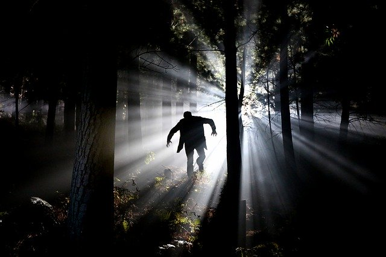

What Are Cryptids?

A cryptid is a creature or animal that defies traditional reasoning and thus their existance is disputed by many as being mearly folklore or fabrications. This website provides an introdution to these entities along with info such as when and where they have been encountered. It is ultimatly up to you to decide whether you believe they exist or not. However we hope you are curious and openminded enough to explore the possibilities.
The images used in this page came from Pixabay.